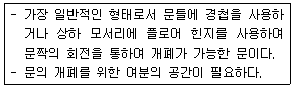
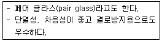
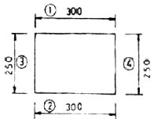
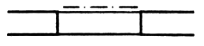

실내건축기능사 (2008-10-05 기출문제)
1과목: 실내디자인
1. 다음의 주거 공간 중 개인의 공간에 속하는 것은?
- 거실
- 식사실
- 응접실
- 서재
(정답률: 100%)

2. 실내디자인의 목표와 가장 관계가 먼 것은?
- 쾌적성 추구
- 물리적, 환경적조건 해결
- 예술적, 서정적욕구 해결
- 개성적인 디자인
(정답률: 68%)
3. 다음 중 실내공간의 분할에 있어 차단적 구획에 사용되는 것은?
- 커튼
- 조각
- 기둥
- 가구
(정답률: 71%)
4. 실내디자인의 구성원리 중 이질의 각 구성요소들이 전체로서 동일한 이미지를 갖게 하는 것은?
- 통일
- 변화
- 율동
- 균제
(정답률: 93%)
5. 다음 중 공간배치 및 동선의 편리성과 가장 관련이 있는 실내디자인의 기본 조건은?
- 경제적 조건
- 환경적 조건
- 기능적 조건
- 정서적 조건
(정답률: 96%)
6. 실내 기본요소인 벽에 대한 설명 중 틀린 것은?
- 실내 공간을 에워싸는 수평적 요소이다.
- 공간의 형태와 크기를 결정한다.
- 외부로부터의 방어와 프라이버시를 확보한다.
- 공간과 공간을 구분한다.
(정답률: 99%)
7. 다음과 같은 특징을 갖는 문의 종류는?

- 미닫이문
- 미세기문
- 여닫이문
- 접이문
(정답률: 88%)
8. 다음 중 식당과 주방의 실내계획에서 가장 우선적으로 고래해야 할 사항은?
- 주부의 작업 동선
- 색채 계획
- 가구 배치 계획
- 조명 계획
(정답률: 96%)
9. 상점의 진열계획에서 고객의 시선이 자연스럽게 머물고, 손으로 잡기 편한 높이인 골든 스페이스의 범위는?
- 650 ~ 1,⑤0mm
- 750 ~ 1,150mm
- 850 ~ 1,250mm
- 950 ~ 1,350mm
(정답률: 69%)
10. 건축화 조명 방식에 해당 되지 않는 것은?
- 코니스 조명
- 코브 조명
- 캐노피 조명
- 펜던트 조명
(정답률: 69%)
11. 공간을 실제보다 더 높아 보이게 하며, 공식적이고 위엄 있는 분위기를 만드는데 효과적인 선의 종류는?
- 수직선
- 수평선
- 사선
- 곡선
(정답률: 92%)
12. 다음 중 거실의 가구 배치에 영향을 주는 요인과 가장 거리가 먼 것은?
- 거실의 규모와 형태
- 개구부의 위치와 크기
- 거실의 벽지 색상
- 거주자의 취향
(정답률: 76%)
13. 면의 형태적 특징 중 자연적으로 생긴 형태로, 우아하고 아늑한 느낌을 주는 시각적 특징이 있는 형태는?
- 기하학적 형태
- 우연적 형태
- 유기적 형태
- 불규칙 형태
(정답률: 48%)
14. 황금 비례의 비율로 올바른 것은?
- 1 : 1.414
- 1 : 1.532
- 1 : 1.618
- 1 : 3.141
(정답률: 97%)
15. 동선계획을 가장 잘 나타낼 수 있는 실내계획은?
- 입면계획
- 천장계획
- 구조계획
- 평면계획
(정답률: 79%)
16. 실내 공기가 오염되는 간접적인 원인에 속하는 것은?
- 기온 상승
- 호흡
- 의복의 먼지
- 습도의 증가
(정답률: 68%)
17. 다음 중 건축물에서 열이 이동하는 방법과 가장 거리가 먼 것은?
- 호흡
- 복사
- 전도
- 대류
(정답률: 92%)
18. 다음의 실내음향계획에 대한 설명 중 옳지 않은 것은?
- 유해한 소음 및 진동이 없도록 한다.
- 실내전체에 음압이 고르게 분포되도록 한다.
- 반향, 음의 집중, 공명 등의 음향 장애가 없도록 한다.
- 실내 벽면은 음의 초점이 생기기 쉽도록 원형, 타원형, 오목면 등을 많이 만들도록 한다.
(정답률: 86%)
19. 광원의 90~100%를 어떤 물체에 직접 비추어 투사시키는 방식으로, 조명률이 좋고 경제적인 조명방식은?
- 직접 조명
- 반간접 조명
- 전반확산 조명
- 간접 조명
(정답률: 70%)
20. 고체 양쪽의 유체 온도가 다를 때 고체를 통하여 유체에서 다른 쪽 유체로 열이 전해지는 현상은?
- 대류
- 복사
- 증발
- 열관류
(정답률: 72%)
2과목: 실내환경
21. 다음 중 석재 가공순서로 옳은 것은?
- 혹두기 → 정다듬 → 도드락다듬 →잔다듬
- 혹두기 → 도드락다듬 → 정다듬 → 잔다듬
- 혹두기 → 잔다듬 → 정다듬 →도드락다듬
- 혹두기 → 잔다듬 → 도드락다듬 → 정다듬
(정답률: 75%)
22. 합성수지의 일반적인 성질에 대한 설명 중 옳지 않은 것은?
- 가소성, 가공성이 크다.
- 전성, 연성이 크고 피막이 강하고 광택이 있다.
- 열에 강하여 고온에서 연화, 연질되지 않는다.
- 내산, 내알칼리 등의 내화학성 및 전기절연성이 우수한 것이 많다.
(정답률: 68%)
23. 석회석이 변화되어 결정화한 것으로 석질이 치밀하고 견고할 뿐 아니라 외관이 미려하기 때문에 실내 장식재 또는 조각재로 사용되는 것은?
- 사문암
- 사암
- 대리석
- 응회암
(정답률: 95%)
24. 얇은 철판에 많은 절목을 넣어 이를 옆으로 늘여서 만든 것으로 도벽 바탕에 쓰이는 금속 제품은?
- 메탈 실링
- 펀칭 메탈
- 프린트 철판
- 메탈 라스
(정답률: 41%)
25. 다음 중 콘크리트의 신축이음(Expansion Joint)재료에 요구되는 성능조건과 가장 관계가 먼 것은?
- 콘크리트의 수축에 순응할 수 있는 탄성
- 콘크리트의 팽창에 저항할 수 있는 압축강도
- 콘크리트에 잘 밀착하는 밀착성
- 콘크리트 이음사이의 충분한 수밀성
(정답률: 44%)
26. 콘크리트의 혼화제 중 AE제의 사용효과에 대한 설명으로 옳지 않은 것은?
- 콘크리트의 작업성을 향상시킨다.
- 블리딩 등의 재료분리를 감소시킨다.
- 콘크리트의 동결융해 저항성능을 향상시킨다.
- 플레인 콘크리트와 동일 물시멘트비인 경우 압축강도를 증가시킨다.
(정답률: 59%)
27. 석고보드(Gypsum Board)에 대한 설명 중 틀린 것은?
- 부식이 안되고 충해를 받지 않는다.
- 습기에 강하여 물을 사용하는 공간에 사용하면 좋다.
- 벽과 천장 등의 마감재로 사용한다.
- 시공이 용이하고 표면가공이 다양하다.
(정답률: 77%)
28. 시멘트의 안정성 측정을 위해 사용되는 시험방법은?
- 브레인법
- 다짐계수시험
- 오토클레이브 팽창도 시험
- 슬럼프 시험
(정답률: 49%)
29. 점토에 대한 설명 중 옳지 않은 것은?
- 점토의 비중은 일반적으로 2.5~2.6 정도이다.
- 점토 입자가 미세할수록 가소성은 나빠진다.
- 압축강도는 인장강도의 약 5배 정도이다.
- 점토의 주성분은 실리카와 알루미나이다.
(정답률: 64%)
30. 다음 중 취성이 가장 큰 재료는?
- 유리
- 플라스틱
- 납
- 압연강
(정답률: 65%)
3과목: 실내건축재료
31. 아스팔트 제품 중 펠트의 양면에 블로운 아스팔트를 피복하고 활석 분말 등을 부착하여 만든 제품은?
- 아스팔트 컴파운드
- 아스팔트 타일
- 아스팔트 프라이머
- 아스팔트 루핑
(정답률: 38%)
32. 알루미늄의 일반적인 성질에 대한 설명 중 옳지 않은 것은?
- 가공성이 양호하다.
- 열.전기 전도성이 크다.
- 비중이 철의 1/3 정도로 경량이다.
- 내화성이 좋아 별도의 내화처리가 필요하지 않다.
(정답률: 75%)
33. 다음과 같은 특징을 갖는 유리 제품은?

- 접합유리
- 복층유리
- 강화유리
- 열선흡수유리
(정답률: 80%)
34. 다음중 콘크리트의 배합설계순서에서 가장 먼저 이루어져야 하는 사항은?
- 요구성능의 설정
- 재료의 선정
- 배합조건의 설정
- 시험배합의 실시
(정답률: 69%)
35. 주로 목재면의 투명 도장에 쓰이는 것으로 외부용으로 사용하기에 적당하지 않고 일반적으로 내부용으로 사용되는 것은?
- 에나멜 페인트
- 에멀션 페인트
- 클리어 래커
- 멜라민수지도료
(정답률: 59%)
36. 기본점성이 크며 내수성,내약품성,전기 절연성이 모두 우수한 만능형 접착제로, 금속,플라스틱,도자기, 유리,콘크리트 등의 접합에 사용되는 합성수지계 접찹제는?
- 페놀 수지 접착제
- 요소 수지 접착제
- 멜라민 수지 접착제
- 에폭시 수지 접착제
(정답률: 85%)
37. 다음 중 속 빈 콘크리트 블록의 기본 블록 치수가 아닌 것은?(단위:mm)
- 390 x 190 x 190
- 390 x 190 x 150
- 390 x 190 x 130
- 390 x 190 x 100
(정답률: 48%)
38. 건축재료의 화학조성에 의한 분류 중 무기재료에 속하지 않는 것은?
- 석재
- 흙
- 알루미늄
- 독재
(정답률: 58%)
39. 목재가 통상 대기의 온도,습도와 평형된 수분을 함유한 상태를 의미하는 것은?
- 전건 상태
- 기건상태
- 생재상태
- 섬유포화상태
(정답률: 47%)
40. 목재 제품 중 목재를 얇은 판,즉 단판으로 만들어 이들을 섬유방향이 서로 직교되도록 홀수로 적층하면서 접착제로 접착시켜 만든 것은?
- 파티클보드
- 섬유판
- 합판
- 목재 집성재
(정답률: 72%)
41. 다음의 도면에서 치수기입 방법이 틀린 것은?

- ①
- ②
- ③
- ④
(정답률: 67%)
42. 다음 중 석재 가공시 잔다듬에 사용되는 공구는?
- 도드락망치
- 날망치
- 쇠메
- 정
(정답률: 64%)
43. 건축물을 각 층마다 창틀 위에서 수평으로 자른 수평 투상도로서 실의 배치 및 크기를 나타내는 도면은?
- 평면도
- 입면도
- 단면도
- 전개도
(정답률: 73%)
44. 다음중 철골구조의 장점이 아닌 것은?
- 철근콘크리트구조에 비해 중량이 가볍다.
- 철근콘크리트구조보다 공기가 짧다.
- 장스팬 구조가 가능하다.
- 화재에 강하다.
(정답률: 68%)
45. 콘크리트 타설에서 거푸집의 측압을 결정짖는 요소가 아닌 것은?
- 타설속도
- 거푸집강성
- 슬럼프
- 압축강도
(정답률: 35%)
46. 철근콘크리트보에 늑근을 사용하는 이유로 가장 적절한 것은?
- 보의 좌국을 방지하기 위해서
- 보의 휨 저항을 증가시키기 위해서
- 보의 전단 저항력을 증가시키기 위해서
- 철근과 콘크리트의 부착력을 증가시키기 위해서
(정답률: 47%)
47. 다음 중 횡력과 진동에 가장 약한 구조는?
- 벽돌구조
- 보강블록조
- 철근콘크리트구조
- 철골구조
(정답률: 80%)
48. 다음 중 창호와 창호철물에 관한 설명으로 옳지 않은 것은?
- 철제 뼈대에 천을 붙이고 상부는 홈대형의 행거 레일에 달바퀴로 매달아 접어 여닫게 만든 문을 아코디언 도어라 한다.
- 일반적으로 환기를 목적으로 하고 채광을 필요로 하지 않은 경우에 붙박이창을 사용한다.
- 오르내리창에는 크레센트를 사용한다.
- 여닫음 조정기 중 열려진 문을 받아 벽을 보호하고문을 고정하는 것을 도어 스톱이라 한다.
(정답률: 55%)
49. 주싱포식과 다포식으로 나위어지며 목구조 건축물에서 처마 끝의 하중을 받치기 위해 설치하는 것은?
- 공포
- 부연
- 너새
- 서까래
(정답률: 43%)
50. 다음 중 실내투시도 또는 기념 건축물과 같은 정적인 건축물의 표횬에 가장 효과 적인 투시도는?
- 1소점 투시도
- 2소점 투시도
- 3소점 투시도
- 전개도
(정답률: 76%)
4과목: 건축일반
51. 다음 중 일반적으로 반지름 50mm 이하의 작은 원을 그리는데 사용되는 제도 용구는?
- 빔 컴퍼스
- 스프링 컴퍼스
- 디바이더
- 자유 삼각자
(정답률: 74%)
52. 건축구조에서의 시공 과정에 의한 분류 중 하나로 현장에서 물을 거의 쓰지 않으며 규격화된 기성재를 짜맞추어 구성하는 구조는?
- 습식구조
- 건식구조
- 조립구조
- 일체식구조
(정답률: 57%)
53. 다음 중 목구조에 대한 설명으로 옳지 않은 것은?
- 건물의 무게가 가볍고, 가공이 비교적 용이하다.
- 내화성이 부족하다.
- 함수율에 따른 변형이 거의 없다.
- 나무 고유의 색깔과 무늬가 있어 아름답다.
(정답률: 73%)
54. 접합하려는 2개의 부재를 한 쪽 또는 양 쪽면을 절단,개선하여 용접하는 방법으로 모재와 같은 허용응력도를 가진 용접의 종류는?
- 모살용접
- 맞댐용접
- 플러그용접
- 슬롯용접
(정답률: 69%)
55. 다음의 평면 표시 기호가 나타내는 것은?

- 셔터달린창
- 오르내리창
- 주름문
- 미들창
(정답률: 80%)
56. 다음 중 벽돌쌓기에 대한 설명으로 옳지 않은 것은?
- 벽돌벽 등에 장식적으로 구멍을 내어 쌓는 것을 영롱쌓기라 한다.
- 벽돌쌓기법 중 영식 쌓기법은 가장 튼튼한 쌓기법이다.
- 하루 쌓기의 높이는 1.8m를 표준으로 한다.
- 가로 및 세로줄눈의 너비는 10mm를 표준으로 한다.
(정답률: 62%)
57. 건축제도에 대한 다음 설명 중 옳지 않은 것은?
- 투상법은 제1각법으로 작도함을 원칙으로 한다.
- 투상면의 명칭에는 정면도,평면도,배면도 등이 있다.
- 척도의 종류는 실척,축척,배척으로 구별한다.
- 단면의 윤곽은 굵은 실선으로 표현한다.
(정답률: 48%)
58. 설계도에 나타내기 어려운 시공내용을 문장으로 표현한 것은?
- 시방서
- 견적서
- 설명서
- 계획서
(정답률: 68%)
59. 다음 중 철근 이음에 대한 설명으로 옳지 않은 것은?
- 응력이 큰 곳은 피하고 한 곳에 집중하지 않도록 한다.
- 겹침이음,용접이음,기계적이음 등이 있다.
- D35를 초과하는 철근은 겹침이음으로 하여야 한다.
- 인장력을 받는 이형철근의 겹침이음길이는 300mm 이상 이어야 한다.
(정답률: 39%)
60. 곡면판이 지니는 역학적 특성을 응용한 구조로서 외력은 주로 판의 면내력으로 전달되기 때문에 경량이면서 내력이 큰 구조물을 구성할 수 있는 구조는?
- 현수구조
- SRC구조
- 철골구조
- 셸구조
(정답률: 71%)